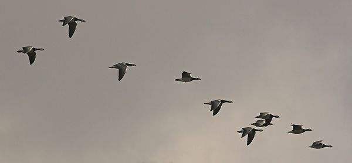
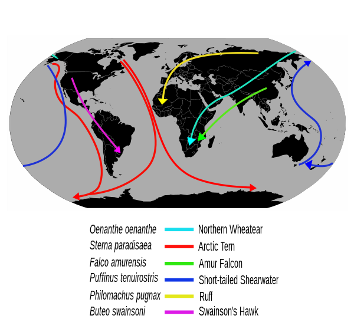

Bird migration is the regular seasonal movement, often north and south along a flyway, between breeding and wintering grounds. Many species of bird migrate. Migration carries high costs in predation and mortality, including from hunting by humans, and is driven primarily by the availability of food. It occurs mainly in the northern hemisphere, where birds are funneled onto specific routes by natural barriers such as the Mediterranean Sea or the Caribbean Sea.
Migration of species such as storks, turtle doves, and swallows was recorded as many as 3,000 years ago by Ancient Greek authors, including Homer and Aristotle, and in the Book of Job. More recently, Johannes Leche began recording dates of arrivals of spring migrants in Finland in 1749, and modern scientific studies have used techniques including bird ringing and satellite tracking to trace migrants. Threats to migratory birds have grown with habitat destruction, especially of stopover and wintering sites, as well as structures such as power lines and wind farms.
The Arctic tern holds the long-distance migration record for birds, traveling between Arctic breeding grounds and the Antarctic each year. Some species of tubenoses (Procellariiformes) such as albatrosses circle the earth, flying over the southern oceans, while others such as Manx shearwaters migrate 14,000 km (7,600 nmi) between their northern breeding grounds and the southern ocean. Shorter migrations are common, while longer ones are not. The shorter migrations include altitudinal migrations on mountains such as the Andes and Himalayas.
The timing of migration seems to be controlled primarily by changes in day length. Migrating birds navigate using celestial cues from the sun and stars, the earth's magnetic field, and mental maps.
